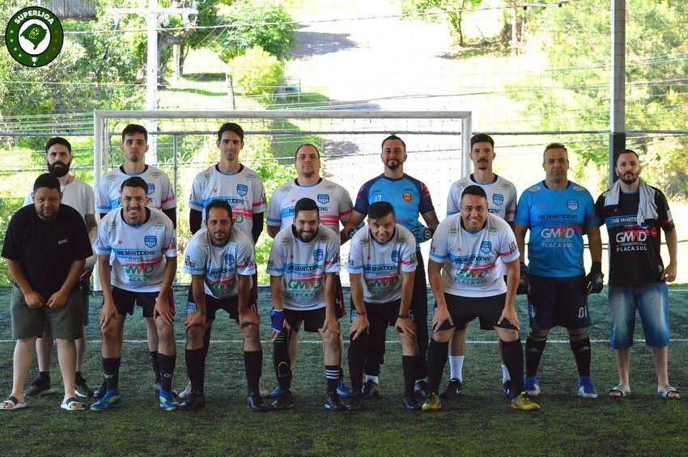

Últimos Jogos
Nosso Elenco
Ranking Geral
| Pos. | Jogador | Pontos | Gols | Assist. |
|---|

Nossa História
O FutBah's Futebol Clube é um time amador de futebol 7 fundado em 2016 por Jonas Bueno e Maiky William. O objetivo do time é proporcionar momentos de lazer e diversão para os jogadores e torcedores, além de estimular a prática do esporte na comunidade local.
O time começou suas atividades no Hangar Complexo Esportivo, em Novo Hamburgo, e atualmente joga no Futhaus 7, em Estância Velha. Os treinos são realizados semanalmente e a equipe participa de torneios e campeonatos na região.
Além do compromisso com o esporte, o FutBah's também tem um papel social importante, promovendo ações comunitárias e apoiando causas sociais.